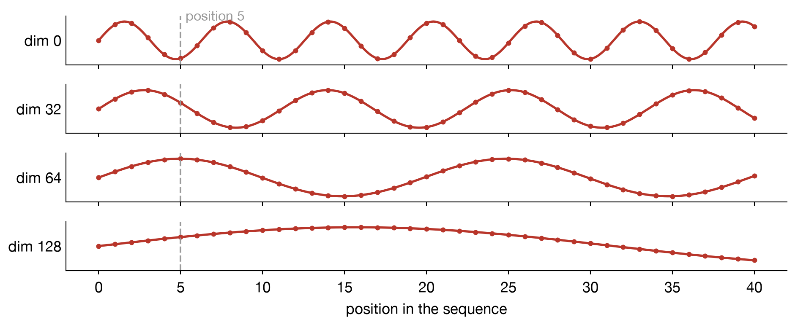
Lecture 5
The whole transformer
SPC5004: Tools and Applications of Generative AI
Prof. Anthony E. Phillips
Tuesday, 6 October 2026
Last time: attention
\[\text{Attention}(Q,K,V) = \text{softmax}\!\left(\frac{QK^\top}{\sqrt{d_k}}\right)V\]
Today: the full original Transformer model architecture

Attention is all you need, Vashwani et al. 2017
What we still need
The original Transformer is a sequence-to-sequence (encoder-decoder) model.
To get from one attention head (last time) to the full model, we still need four ingredients.
- The decoder needs to pay attention to the encoder. This is called cross-attention, as opposed to the self-attention we studied last time.
- Attention can’t see word order. Nothing in the formula depends on where a token is in the sentence.
- One head isn’t enough. A single attention step gives each token one query, and one blend of values. But a token often needs several different things from its context at once.
- Attention isn’t a complete model. It needs to be packaged into a block that can be stacked many times, with an input and an output at either end.
Three variations on the theme of attention
Self-attention (encoder)
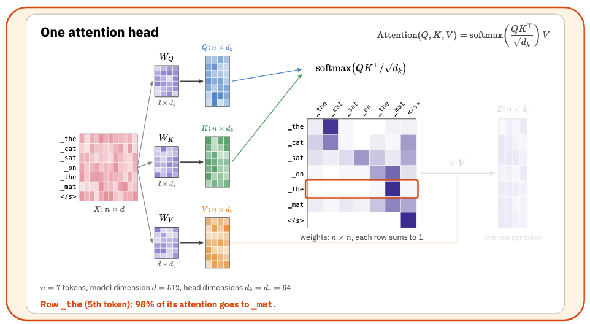
An attention head (MarianMT, encoder layer 6, head 1). Each the attends to its own noun.
Masked self-attention (decoder)
- The decoder’s input is the target sentence shifted right: it starts with a start token, so position \(i\) predicts token \(i+1\).
- During training, the whole target is fed in at once, and every position is predicted in parallel.
- With the whole target present, position \(i\) could simply copy token \(i+1\).
Masked self-attention (decoder)
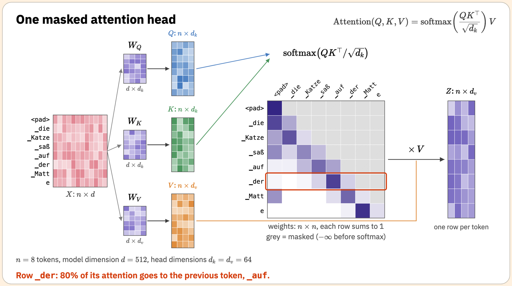
- We solve this the scores above the diagonal to \(-\infty\) before the softmax, so their weights become 0. Each position sees only itself and earlier positions, just as in generation, where later tokens don’t exist yet.
Cross-attention (encoder-decoder)
- We have already seen that within the encoder, we modify the embedding of each input token by allowing it to pay attention to others in the input.
- Similarly, within the decoder, we can modify the embedding of each output token by allowing it to pay attention to others that have already been output.
- The final step is to allow the output to pay attention to the input tokens: this is cross-attention.
- The query comes from the decoder, but the key and value come from the encoder.
Cross-attention
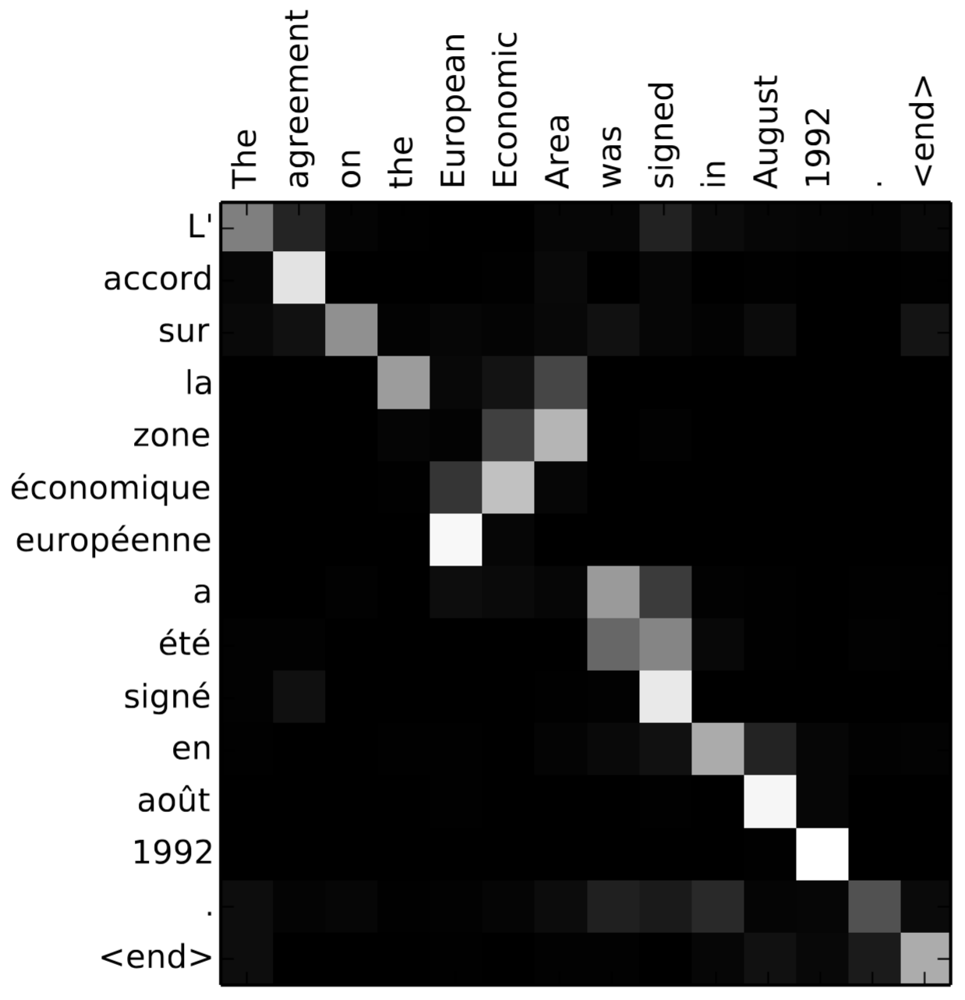
Neural machine translation by jointly learning to align and translate, Bahdanau et al. 2014
Cross-attention
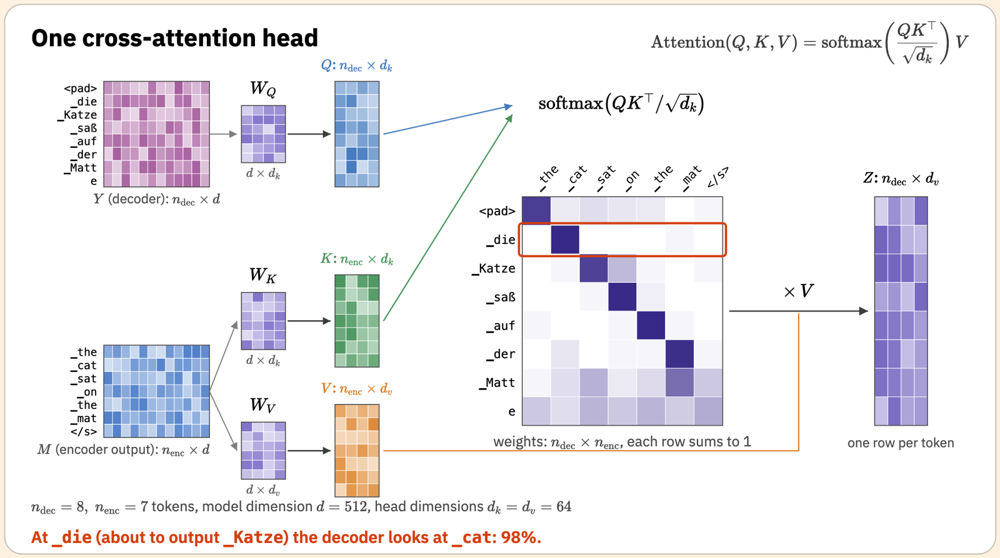
Ordering tokens
Attention has no sense of order
- Each score is a dot product of one token’s query with another token’s key. Neither depends on where those tokens are.
- Attention treats its input as an unordered set of tokens.
- But language obviously cares about order: “dog bites man” ≠ “man bites dog”.
- Recall the “nearest noun” shortcut from the agreement example in the lab. Our keys couldn’t express it, because they carried no information about position.
Positional encoding
The solution is to add a vector to each token’s embedding that depends only on its position in the sequence.
\[X \;\to\; X + \text{PE}\]
- PE is another \(n \times d\) matrix: row \(i\) is the encoding of position \(i\), whatever token happens to be there.
- Now the same word at a different position has a different input vector, so it can have a different query, key and value.
- With position available, a head can learn queries like “the previous word” or “the nearest noun”.
- What should the position vectors be? The original transformer paper used a fixed pattern of sine waves.
Sinusoidal positional encoding
Each dimension is a sine (or cosine) of the position, with a wavelength that grows with the dimension number: from about 6 tokens up to tens of thousands.
\[ \text{PE}_{p,\,2i} = \sin\!\left(\frac{p}{10000^{2i/d}}\right) \qquad \text{PE}_{p,\,2i+1} = \cos\!\left(\frac{p}{10000^{2i/d}}\right) \]
Why sine waves?
Think of the hands of a clock.
- The second hand (fast, low dimensions) tells apart neighbouring positions, but repeats every few tokens.
- The hour hand (slow, high dimensions) barely moves between neighbours, but tells apart positions far apart.
- Together, every position gets a unique pattern, for sequences of any length, with no training needed.
- Moving forward by a fixed number of positions always changes the pattern in the same way. This makes relative position (“two tokens back”) easy for attention to detect.
In a real model
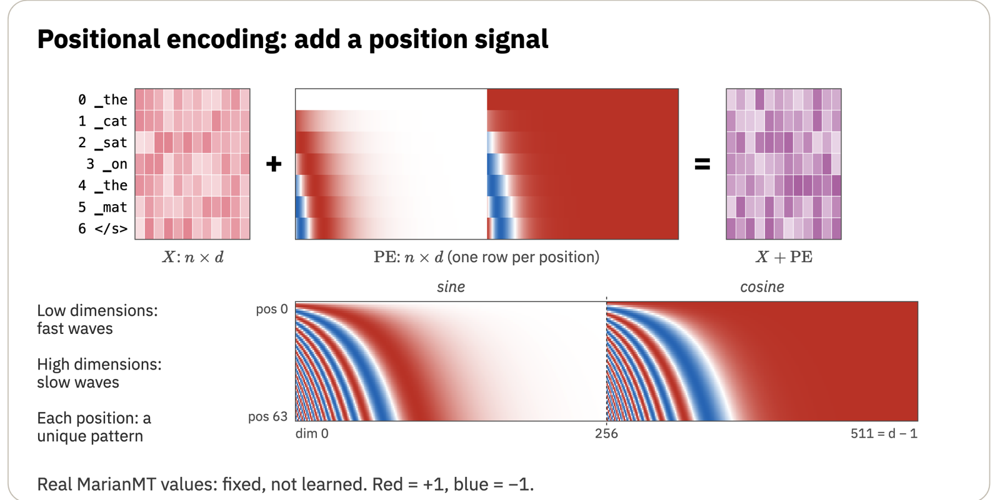
MarianMT puts all its sines first and its cosines second; the paper interleaves them. The purpose is the same.
Other ways to encode position
- Learned position embeddings: a second lookup table, with one learned row per position, trained like the word embeddings (BERT, GPT-2). Simple, but limited to the lengths seen in training.
- Relative and rotary positions (T5, Llama, Qwen, most modern LLMs): instead of adding anything to \(X\), build the position offset directly into the query–key comparison. (For more details on this, look up rotary position embedding, or RoPE.)
Multiple attention heads
Why one head isn’t enough
Recall the subject–verb agreement example from lab 4:
The key to the cabinets is silver.
isneeds the number of its subject: is key singular or plural?silverneeds the meaning of the noun it describes: what kind of thing is silver here?- Both look for the same token (key), but want different information from it.
- With a single \(W_V\), every token receives the same kind of information. If \(V\) carries number,
silvergets number too, whether it wants it or not.
Several heads in parallel
We solve this by running the attention calculation several times in parallel, each with its own \(W_Q\), \(W_K\), \(W_V\). These are combined simply by concatenating their outputs and mixing them with one more (learned) matrix \(W_O\):
\[\text{head}_i = \text{Attention}(XW_Q^{(i)},\, XW_K^{(i)},\, XW_V^{(i)})\]
\[\text{MultiHead}(X) = \text{Concat}(\text{head}_1, \dots, \text{head}_h)\,W_O\]
- Each head can specialise: one tracking agreement, one finding what a pronoun refers to, one looking at the previous word, and so on.
- Nobody assigns the heads their jobs: as always, the weights are learned. Many heads end up hard to interpret.
Real heads
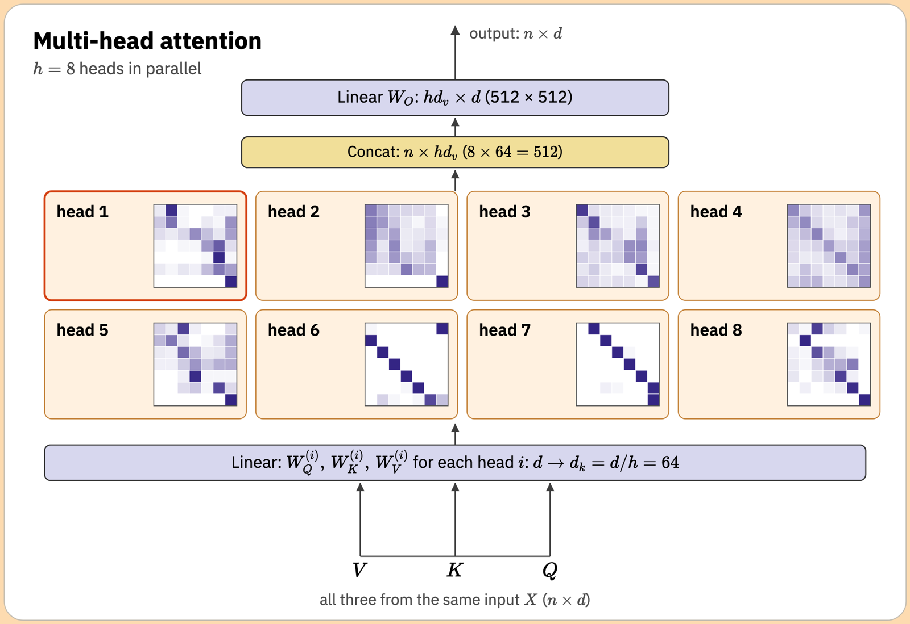
All 8 heads of one real layer, on the same sentence. Some look mostly at a neighbouring token: only possible thanks to positional encoding.
What does it cost?
Typically, each of the \(h\) heads works in a smaller space: with model dimension \(d\), each head uses \(d_k = d_v = d/h\).
- MarianMT (and the original paper): \(d = 512\) and \(h = 8\) heads, so \(d_k = 64\). GPT-2 small: \(d = 768\) and \(h = 12\), so again \(d_k = 64\).
- Concatenating \(h\) outputs of size \(d/h\) gives back a vector of size \(d\), the same as the input. \(W_O\) is \(d \times d\).
- So multi-head attention costs about the same as a single big head: it just splits the work into several independent lookups.
Add & Norm
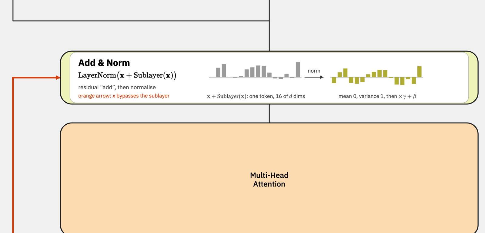
- Residual connection (orange arrow): add the sublayer’s input back to its output, \(\mathbf{x} + \text{MHA}(\mathbf{x})\). Each sublayer only has to learn a change to the token’s representation, and information can flow straight through a deep stack.
- Layer normalisation: rescale each token’s vector to mean 0 and variance 1 (then a learned scale and shift), keeping the numbers at a sensible size.
Feed-forward network
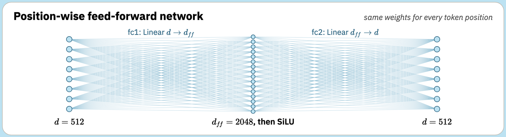
- Two linear layers with a non-linearity between them: \(d \to d_{ff} \to d\), here \(512 \to 2048 \to 512\).
- Applied to each token separately, with the same weights at every position. Attention mixes information between tokens; the feed-forward network processes what each token has gathered.
- This part holds most of a layer’s parameters: e.g., MarianMT has 2.1M parameters here vs 1.05M for attention.
Stacking layers
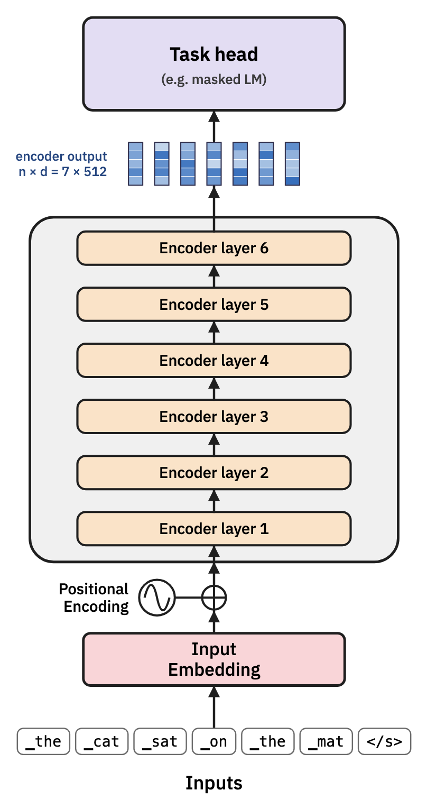
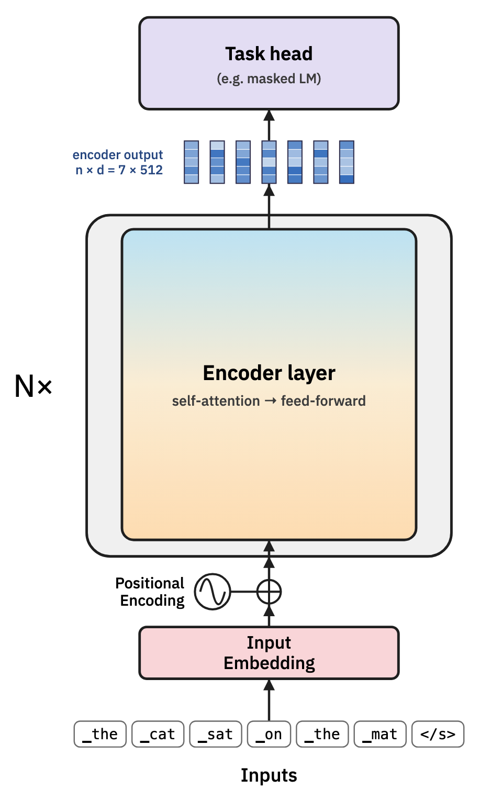
- A layer takes an \(n \times d\) matrix, and returns an \(n \times d\) matrix. So layers can be stacked.
- Each layer has the same architecture but its own weights, and can use what earlier layers worked out.
- There are \(N = 6\) layers in MarianMT, 12 in BERT-base, and 30 to 100+ in large LLMs.
The full transformer
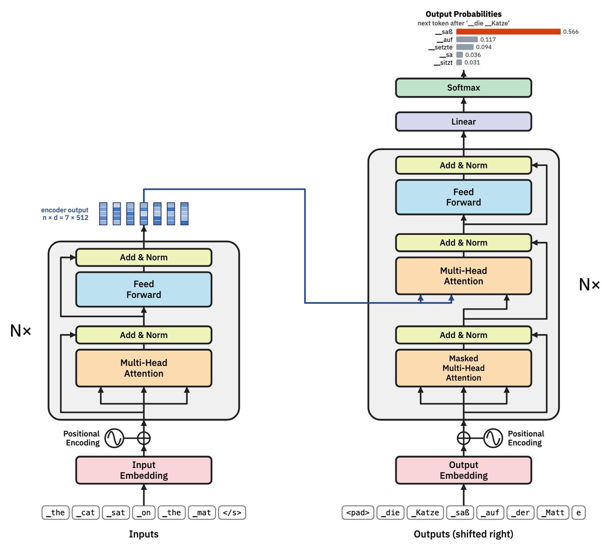
Today’s lab
- If you haven’t already done it, start with lab 4, and aim to have both finished by the end of today’s class.
- Lab 5 builds one self-attention head in matrix form, in NumPy, using the agreement example: from \(X\) to \(Q\), \(K\), \(V\), the score table, softmax and the output.
- You’ll see what goes wrong when the embeddings are used directly, design \(W_Q\) yourself, and find out experimentally why we divide by \(\sqrt{d_k}\).
Summary
- The decoder adds masked self-attention, so it can’t see the future, and cross-attention, to read the encoder’s output.
- Attention on its own ignores word order. Positional encodings, such as the original sine waves, add an explicit position signal to each token’s embedding.
- Multi-head attention runs several attention heads in parallel, each with its own projections, so a token can gather different information for different purposes. The outputs are concatenated and mixed by \(W_O\).
- A transformer layer combines multi-head attention with a feed-forward network, each wrapped in a residual connection and layer normalisation. In a real model, many layers are stacked.
An interactive version of the full Transformer diagram is available online as a learning resource, to help you revise the topics of the first five lectures in depth.